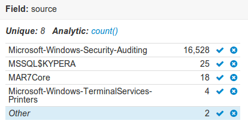

Monitoring Guide
Event Monitoring
Server Health Monitoring
Application Monitoring
Custom Log Monitoring
Custom Apps
- App Overview
- Data Collection Services
- Saving Searches and Workspaces
- Deployment
- Bundle Config
- Troubleshooting
Datasources
Datatypes
Common Deployment Scenarios
Contact
Monitoring Unix Events
Unix based hosts store application and systom logs in the /var/log folder using the syslog format. Logscape monitors unix events in the syslog format reporting on application and host activity Many windows applications will use Windows Event Logging infrastructure to log application errors and warnings. Logscape monitors the Application, system and Security Logs. To to get started with Windows Event Monitoring follow these steps:
Install the Windows App. You can find the windows app here Windows App
Once Installed Navigate to the Windows Event Page and you will find a search which contains all your events broken down by Source

Drill into your search and select the type as win-evt2k8
Overview of the Fields
Now that you are on the Search Page, you can start interacting with the data. The Facets display the fields describing your Windows Event data. Let's take a look at the fields returned.
name- Contains the summary information for the different logs. e.g Security , Application, System. It may contain custom logs if it has been configure to collect that data.
source- contains the summary information for the different type events
Event Id - contains the the Event ID. For example, 4768 refers to the Initial Logons.
taskdescribes the opeartion.